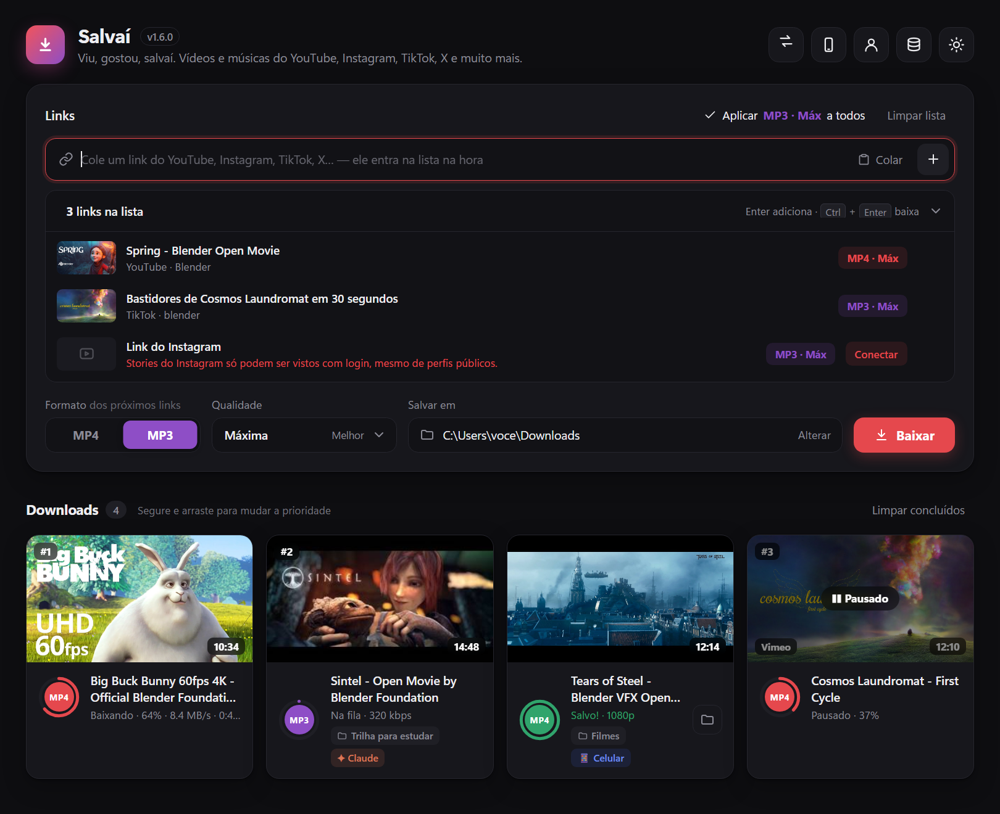

Baixe vídeos e músicas em MP4 e MP3 no Windows
YouTube, Instagram, TikTok, X, Facebook e mais de 1.800 sites. Cole o link, escolha o formato e a qualidade — até 4K no vídeo e 320 kbps no MP3. Grátis, sem anúncios e sem cadastro.
Windows 10 e 11 · um único arquivo, sem instalar nada · código aberto

Tudo o que você precisa para salvar vídeos e músicas
YouTube para MP4 e MP3
Vídeos até 4K e músicas em MP3 com capa e título, com a qualidade escolhida para cada link.
Instagram, TikTok, X e Facebook
Reels, vídeos e posts de mais de 1.800 sites. Conteúdo privado funciona com a sua conta conectada.
Vários links de uma vez
Monte uma fila, arraste para mudar a prioridade e pause quando quiser. Playlists também.
No celular, sem instalar nada
Pelo QR code, peça downloads ao PC, assista direto do computador e salve no celular pelo Wi-Fi.
Sala de troca com amigos
Troque arquivos e pastas de qualquer tamanho com quem está em outra rede, nos dois sentidos. Quem recebe abre pelo navegador, sem instalar nada.
Integração com o Claude
Peça em linguagem natural: o Claude busca, baixa e organiza vídeos e músicas em pastas.
Seguro e privado
Sem telemetria, contas criptografadas pelo Windows e atualizações conferidas pelo SHA-256 oficial.
Como baixar vídeo do YouTube no PC com o Salvaí
- Baixe o Salvai.exe e abra com dois cliques.
- Copie o link do vídeo — o Salvaí já reconhece o que está copiado.
- Escolha MP4 ou MP3 e a qualidade.
- Clique em Baixar. Pronto: o arquivo vai para a pasta que você escolheu.
Perguntas frequentes
Como converter vídeo do YouTube para MP3?
Cole o link no Salvaí, escolha MP3 e a qualidade (até 320 kbps). A música é salva com capa e título.
Dá para baixar Reels do Instagram e vídeos do TikTok?
Sim. O Salvaí aceita links do Instagram, TikTok, X, Facebook, Vimeo e mais de 1.800 sites. Para perfis privados, conecte a sua conta no app — ele baixa só o que você já consegue ver.
O Salvaí é grátis?
Sim. É grátis, sem anúncios e sem telemetria, com o código aberto no GitHub.
O Windows disse que é vírus. É seguro?
O aviso aparece porque o app não tem um certificado pago de assinatura. Veja como confirmar que o arquivo é o original pelo SHA-256 publicado em cada versão.
Como mandar arquivos grandes para um amigo pelo Salvaí?
Abra a Sala de troca (ícone de duas setas), crie uma sala e mande o link e o código pelo WhatsApp. Você aprova a entrada e cada um escolhe o que baixar. Funciona com pastas inteiras, sem limite de tamanho, e o amigo não precisa instalar nada.
Funciona no Mac ou no Linux?
Por enquanto, só no Windows 10 e 11. O celular funciona pelo navegador, no Android e no iPhone.